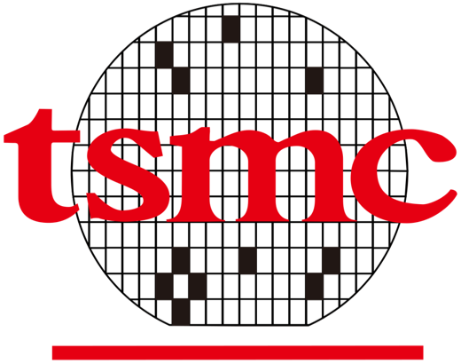
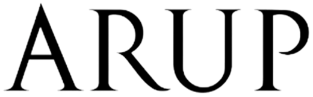
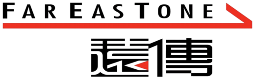
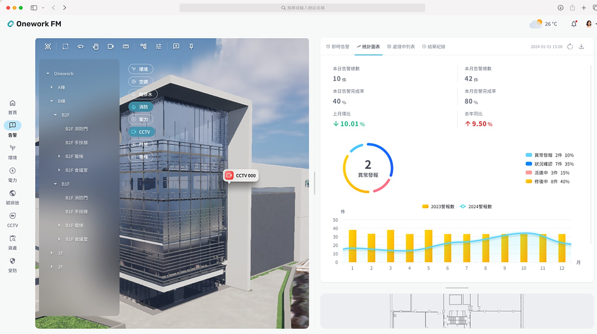
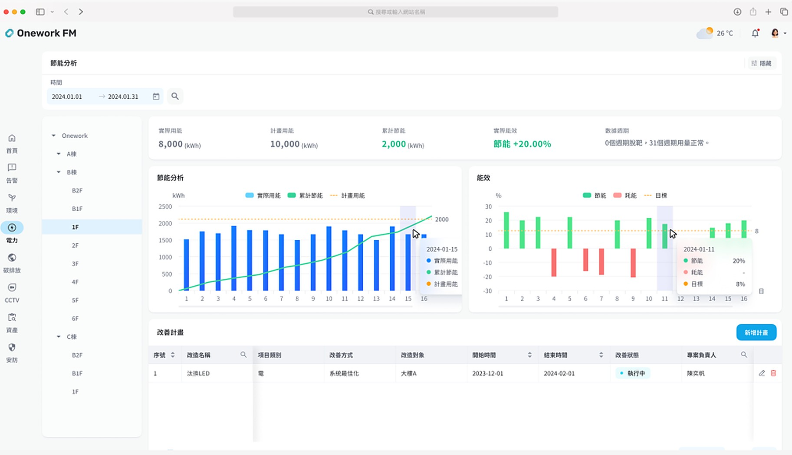

整合模型與數據 的數位孿生專家
ONE WORK ONE PLATFORM
合作夥伴及客戶
機場、開發商與政府單位的長期夥伴。



公司定位
從模型
到孿生。
-
MODEL
自研 BIM 模型引擎
BIM 模型縮小 95%、維持 100% 精度，手機與網頁都跑得動，所有參與者即時在同一個模型上協作。
-
INTEGRATE
BIM、GIS、AIoT 整合在同一平台
電力、水、空調、照明與安全系統的數據，匯入同一個建築與城市的空間模型。
-
TWIN
會學習的即時數位孿生
預測性維護、節能策略與自動風險警示，讓決策者看得懂、立刻能行動。
數據指標
自研引擎，在真實案場上驗證。
95%
BIM 模型壓縮率，同時保持 100% 模型精度。
25
指標性合作對象
50+
專利技術
15
服務超過 3 年的客戶
50+
完成專案
產品與服務
一個數位孿生，四個平台。
- AirhubBIM + PLM Platform 從設計初期、廠商合約、施工到設施營運，所有參與者在同一平台協作。
- FM設施管理平台 整合 Siemens、Schneider、Honeywell 等 SCADA 系統的 3D 儀表板，快速找出問題、簡化巡檢。
- EMS能源管理 iEMS 平台 監測與分析能源使用，AI 引擎把電表數據變成用電預測與月報。
- CIM智慧城市基礎建設平台 機場與城市級資產的戰情室，結合 BIM、GIS 與 AIoT，高可用並協助取得 ISO 19650-2 認證。
ONEWORK FM · 平台畫面
首頁總覽：告警、即時人數、各樓層環境與用電一次看完 
3D 告警：在建築模型上直接找到 CCTV、消防、空調點位 能流分析：從整棟大樓到各樓層與各系統的用電流向 
節能分析：實際與計畫用能、累計節能與改善計畫